As you may already know, GeneXus allows you to apply a Database Reverse Engineering process, making your GeneXus application able to access data stores defined in other databases.
But how and where do you define this process? By using the Database Reverse Engineering tool (DBRET).
In order to start this tool, follow the steps shown below:
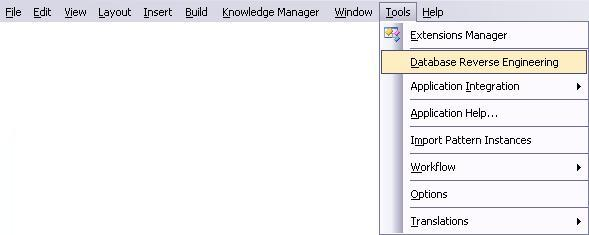
The Database Reverse Engineering process is completely defined by a three step wizard. Let's go through those steps with a simple example.
Suppose you have an Agency KB (Airlines, Flights, etc.), and you want your application to access some tables (Customers and Countries) in another database. This database has the following tables:
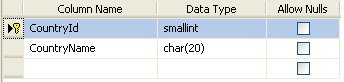 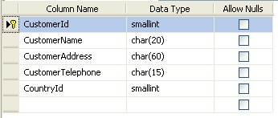
Once you have selected the Database Reverse Engineering option (see image above), you will reach the first step window, where all the necessary information to connect to the external database is requested.
In this dialog, all connection information to access the DBMS must be filled out, such as DBMS, connection method, database name, user and password.
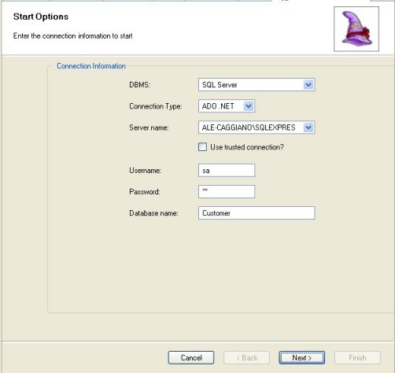
Once this step is completed, all information about tables, indexes and relationships between tables is retrieved from the DBMS and saved in a metadata file.
In this step you must select the tables you want to consolidate in this instance.
- Use the "Add Related" button to automatically add all referenced tables (N-1 relations) to those already selected.
- The "Save Selection" button enables you to save all selected tables to be easily retrieved in a further execution through the "Load Selection" button.
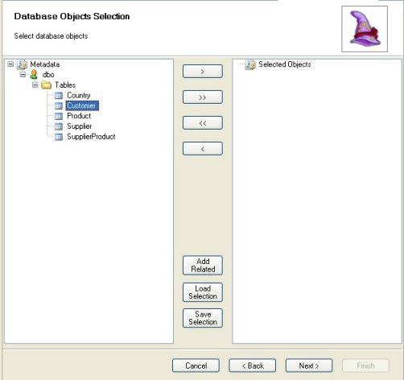
Following the example, if you select the Customer table and then press the Add Related button, you will be selecting Customer table and Country table, as it is shown in the image below:
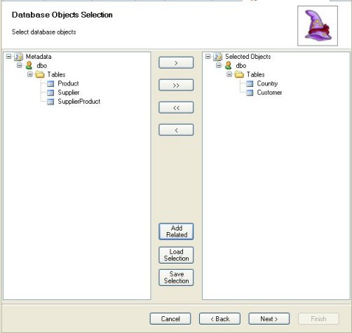
After this step, the Reverse Engineering Process itself takes place, where the DBRET (Database Reverse Engineering tool) evaluates all relationships between selected tables and defines the necessary GeneXus objects.
In this step you will see three tags:
This report shows all defined objects created during the reverse engineering process and, if it finds any problems, the corresponding warning will be displayed.
These are some special warnings that could appear:
- "<Attribute> is a FK to <Table> but it's not selected." In this case there is an option -Add Table- to select this table and automatically reprocess the objects.
- "The table doesn't have a primary key." When the external table doesn't have a primary key, the DBRET creates a Data View but not the Transaction. If you want to create it anyway, select some table's attributes as a primary key by means of the
"Choose Primary Key" link.
- "The attribute <Attribute> is auto number and was chosen as primary key." This warning appears when the table does not have a primary key but contains an auto numbered attribute.
- "The type <data_type> is not supported." This message is triggered when the table contains an attribute with a data type that cannot be automatically matched with GeneXus ones. Use the "Change Type" option to select one of the GeneXus data types that adjusts best.
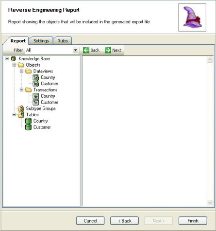
You can change some settings or define new rules in this step before finishing (reprocessing could be performed).
Now analyze the Settings and Rules options:
As you may see in the image below, the group of settings is:
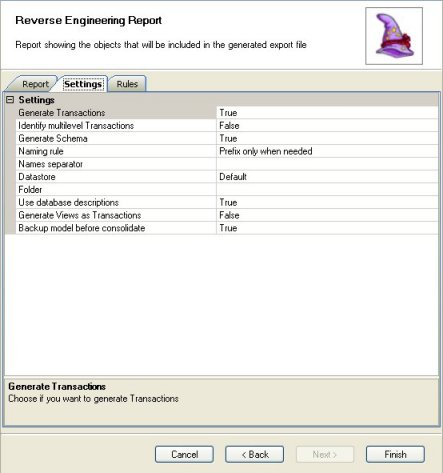
- Generate Transactions:
- True: A Transaction will be generated with the structure of each table to be imported.
- False: Only Data View will be consolidated.
- Identify Multilevel Transactions:
- False: By default each table to be imported will define a Transaction and different Data View. The generated transactions will then be of only one level.
- True: Certain subordination patterns are looked for to define transactions of more than one level. For example, if there is a table for OrderSalesHeader and another for OrderSalesLines, only one Transaction will be created with the two levels.
- Generate Schema: When this option is True, the table schema information is stored in the data view schema property.
- Naming Rule:
- Prefix only when needed: Based on the referential integrity definition in the database, the tool automatically prefixes those attributes that need to be changed to avoid conflict and preserve the tables relations based on URA. This is the default option.
- Prefix always: Always prefixes attributes with the table name and defines the corresponding subtypes groups to preserve tables relationships.
- Same name-same thing: This option applies to databases created with GeneXus or others based on URA definition. If two tables have the same attribute but no referential integrity control is defined between them, they will be considered as related tables.
- Names separator: If an attribute needs to be prefixed with the table name, this separator will be used.
- Datastore: By default, all Data Views will belong to the default data store. With this property you can choose another data store or define a new one.
- Folder: Specify the folder name where the new objects will be consolidating in the GeneXus KB.
- Use Database description:
- True: The attributes description will be loaded from the database to set the "Description Attribute" property.
- False: The attribute's description will be the same as the attribute's name.
- Generate Views as Transactions: Activating this property the user will be able to select a "key" attribute for the View in order to create a Transaction object associated with it.
- Backup model before consolidate: If it is activated, a model backup is created before the consolidation takes place.
- Maximum length of table prefix1: In some cases DBRET could prefix the attributes with their table's name (see Naming Rule above). With this property you can set the maximum length to be considered for the prefix. (Default: 200)
- Apply replace rules to attributes prefix1: True | False (default: False). In some cases DBRET could prefix the attributes with their table's name (see Naming Rule above). With this property you can change the scope of 'Raplace Rules' to be applied after the attributes were prefixed (True) and not before (False).
Use this property with caution, as the name of the renamed attribute might match to an existing one ( DBRET only controls the uniqueness of the name when it applies the prefix).
Note: 1 These properties are available since GeneXus 15 Upgrade 5.
There are four types of rules:
- Rename
- Replace
- Change Type
- Add Relation
For the first three rules you have to specify the old information, the new information and the scope.
Once the rule is defined, you have to press the "Add Rule" button to add it to the rules list. The rules will be automatically applied when you back to the Report tab dialog.
- Rename: Rename everything referred to a Table, Attribute or Index "Name" with the "New name." The rule will be applied only for the "Object type" scope. If the Table Name scope is specified, the rule only applies to this table.
- Replace: Replace all the occurrences of the string "To replace" with "Replace with" in the names of "Object type" scope. If the "Table name" parameter is specified, the rule only applies to this table. Besides, if the "Object Name" parameter is specified, the rule only applies to this table/index or table/attribute. If the property 'Apply replace rules to attributes prefix' is True, then this rules applies for those prefix.
- Change Type: This rule allows changing the attribute data type. With the "Table name" and "Attribute name" parameters you specify the scope of the rule.
- Add Relation: Use this rule to establish a relationship between two tables that DBRET could not determine. This information will be taken to create the Knowledge Base model (it does not affect the real database).
In the example, you want to rename any "Customer" sequence as "FlightCustomer." So, define the corresponding Rename rule, as you may see:
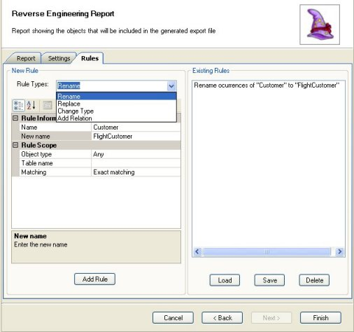
Save / Load Rules: Use the Save and Load button to backup or retrieve previously saved rules.
And that's all!! You've reached the end of the Database Reverse Engineering Wizard. Press the Finish button. What happened afterwards in the example? Look and compare both Folder View images below.
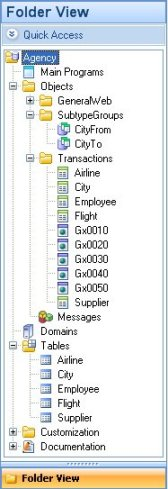 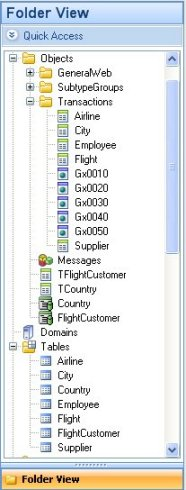
In the first one, you can see the original objects in the Agency KB. In the other one you see the same Agency KB but with some more GeneXus objects automatically created to represent the corresponding schema. Note that as a result of the Rename rule applied, there are no "Customer" objects, but "FlightCustomer" objects:
- FlightCustomer Transaction
- Country Transaction
- FlightCustomer Data View
- Country Data View
- Country table
- FlightCustomer table
Reverse Engineering Process
Reverse Engineering Checkings when executed integrated to GeneXus
|